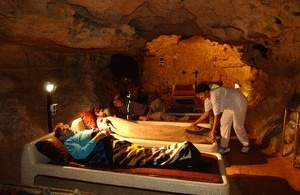

|
|
Thermal-
und Luftkurort Tapolca
|
|
Lage: Tapolca
liegt einige Kilometer entfernt vom Nordufer des Balatons in einer sehenswerten
hügeligen Landschaft. Vom berühmten
Weinberg Badacsony am Plattensee fährt man 30 km in
nordöstlicher Richtung nach Tapolca. Das Wort Tapolca stammt
aus dem
Slawischen und bedeutet
warmes Wasser. Die Grotte entdeckte man erst Anfang des 20.
Jahrhunderts zufällig beim
Brunnengraben als ein Schaf plötzlich vor den Augen eines
Schäfersjungen verschwand. 80 Treppenstufen führen
vom Eingang (Kisfaludy utca Strasse 2) hinunter zum ca. 25 Meter tiefer, langsam fließenden Höhlenteich. |
 |
 |
Erstmals
1272 urkundlich
erwähnt, hat die
Stadt Tapolca heute
18.000 Einwohner, eine römisch-katholische
Kirche aus
dem 15. Jahrhundert und eine einmalige Sehenswürdigkeit, den
unterirdischen Bachlauf in einer weitverzweigten Grotte. Unter der
Stadt erstreckt sich eine 4 km lange,
"Tavasbarlang" (dt. Höhlenteich) genannte Karsthöhle. Der unterirdische Bachlauf ladet
(eher in
den Sommermonaten) zu einer kurzen, abenteuerlichen Bootsfahrt ein. Die
reine Höhlenluft und das mineralstoffreiche Heilwasser der
Höhlen
ermöglichen die Genesung nach zahlreichen Erkrankungen. Eine
Kur in
Tapolca ist auch für den gesunden Ungarn-Tourist
sinnvoll. |
|
|
|
 |
|
Der Malomtó (Mühlenteich) wird
aus dem
unterirdischen Bachlauf gespeist, der aus der Höhle entspringt und für die
Wassermühle am rechten Bildrand aufgestaut wurde. Der
Teich ist voller Zierfische. Der Platz ist
umgeben von Restaurants, die zum verweilen einladen. Im Sommer
werden hier verschiedene Programme geboten.
|
|
 |
Höhlenkur -
Die mit
Mineralstoffen angereicherte Luft und das besondere Mikroklima haben
Heilwirkung. Die mikroklimatischen Parameter der Höhlenluft
sind konstant, die
Luft ist staub-, pollen- und allergenfrei, die Luftfeuchtigkeit ist
hoch.
|
|
In
einer unterirdischen Höhle unter dem Pelion Hotel
werden asthmatische und allergische Atemwegserkrankungen kuriert.
Am Kur können die
Besucher des städtischen Strandbades genauso teilnehmen, wie
die Gäste des Pelion Hotels über der Höhle. |
 |
|
Eigenschaften des Heilwassers:
radiumhaltig, reich an Mineralien (Kalzium, Magnesium,
Hydrogenkarbonat, Sulfat und weitere Spurenelemente) - insgesamt 1128
mg/l. Das
mineralstoffreiche Thermalwasser wird bei zahlreichen Leiden
empfohlen.
|
Indikationen
für eine Badekur in Tapolca: Degenerative Formen von Rheuma
und anderer Erkrankungen des Bewegungsapparates (z. B. Arthrose,
Spondylarthrose, Diskopathie). Chronische Entzündungen der
Wirbelsäule und der Gelenke (z. B. progredient chronische
Polyarthritis, Bechterewsche Krankheit). Rheuma der
Muskelbindegewebe und Sehnen. Sekundär-Gelenkrheumatismus,
Gelenkschmerzen bei Stoffwechselstörungen (z. B. Gicht).
Zustand nach Brüchen, Unfallverletzungen, nach Operationen am
Bewegungsapparat, besonders Behandlung und Rehabilitation nach
Brüchen an Armen und Beinen. Chronische, periphere, mit dem
Nervensystem zusammenhängende und v.
a. auf mechanische Ursachen zurückzuführende
Beschwerden (z. B. Ischias, Polyneuropathie, Parese). Vor- und
Nachbehandlung von operativen Eingriffen an Gelenken und Bandscheiben
(z. B. Nachbehandlung von Lumbago). Chronische Frauenleiden.
Kontraindikationen:
Bösartige Tumore, Kreislaufstörungen,
Herzschrittmacher, schwerer Bluthochdruck, alle akuten
Entzündungskrankheiten, alle akuten und chronischen
ansteckenden Krankheiten, aktives Geschwür, die ersten 6
Wochen nach einer Röntgentherapie, Schwangerschaft.
|
Im
neuen 4-Sterne-Kurhotel im Stadtzentrum werden Badekuren mit allem Drum
und Dran zu günstigen Konditionen angeboten. Die medizinische
Abteilung ist in erster Linie auf die Behandlung von allergischen
Erkrankungen spezialisiert. - Das Bild rechts wurde am 19.
März 2003, einen Tag vor dem Irakkrieg aus
dem Fenster des damals neuen Kurhotels im Morgengrauen, zwangsweise bei
Gegenlicht aufgenommen. Im Hintergrund erkennt man die
Silhoulette des 10 km entfernten, von seinen feurigen Weinen
berühmten
Badacsonyberges.
Siehe auch >>> |
 |
|
| |
|
Direkt
unter dem Hotel befindet sich eine Karsthöhle, die nicht nur
einen schönen Anblick bietet, sondern über ein
spezielles Mikroklima und daher über eine besondere
Heilwirkung verfügt. Die mikroklimatischen Parameter der
Höhlenluft sind beständige Werte, sie enthalten keine
externen aggressiven Faktoren, sind praktisch pollenfrei. Die
Temperatur ist konstant und beträgt 14-16 °C. Die
Luftfeuchtigkeit ist hoch, es besteht daher keine Belastung durch
Staub. Diese Faktoren sind an sich von heilender und beruhigender
Wirkung. Die Dienstleistungen im Hotel: Grottenkuren,
Schlammpackungen, Hydrotherapie, Inhalatorium, Wintergarten (Oxarium),
Elektrotherapie, Heilmassage, 2 Heilgymnastikräume mit
Terrasse, allergologische Belastungsuntersuchungen, pulmonologische und
Rheumatologische Untersuchungen, spezielle Behandlung bei
Frauenbeschwerden. Ein Zahnarzt ist selbstverständlich auch
für Sie da. |
| |
| |
|
Ungarn-Tourist Team

|
| |
| |
|